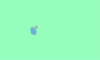

実行例
import tkinter as t, random, time
def func(event):
#hex()は10進数を16進数に変換する関数、hex(16) = '0x10' となるので'0x'を取り除くために[2:]を入れている
clr = [ hex( random.randint( 0, 255 ) )[2:] for i in range(3) ]
#カラーコードは(２桁)×(赤緑青３色)=６桁なのでそれに合わせて、１桁の数字を２桁に変換している。
new = [ clr[k] if( len( clr[k] ) > 1 ) else '0' + clr[k] for k in range(3) ]
app[ 'background' ] = '#{}{}{}'.format( new[0], new[1], new[2] )
time.sleep( 0.2 )
app = t.Tk()
app.title( 'テスト' )
app.geometry( '200x120' )
app.bind( '<Motion>', func )
app.mainloop()
実行結果（gif画像）
※ 明滅にご注意ください
